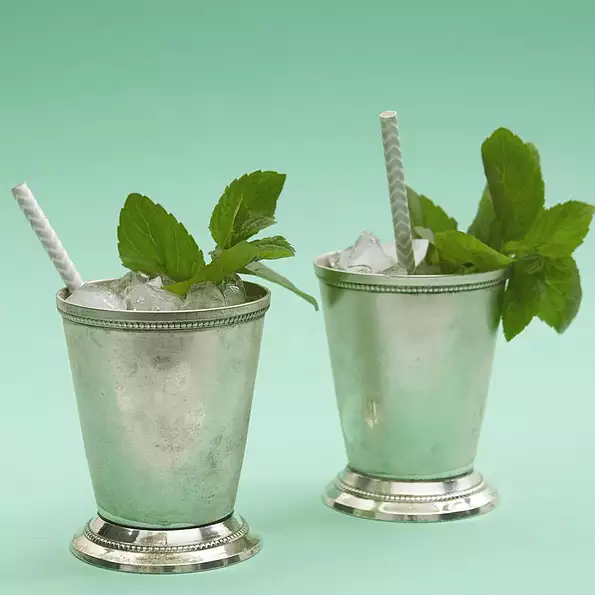

Mint Juleps Recipe

Enjoy this amazing drink to get the party started or to cap the night off. Best served in a frozen silver goblet, but glasses works fine as well.
Ingredients:
½ cup roughly chopped fresh mint leaves
32 fluid ounces Kentucky bourbon
8 sprigs fresh mint leaves for garnish
Directions:
Combine water, sugar and chopped mint leaves in a small saucepan. Bring to a boil over high heat until the sugar is completely dissolved. Allow syrup to cool, approximately 1 hour. Pour syrup through a strainer to remove mint leaves.
Fill eight cups or frozen goblets with crushed ice and pour 4 ounces of bourbon and 1/4 cup mint syrup in each. (Proportions can be adjusted depending on each person's sweet tooth). Top each cup with a mint sprig and a straw. Trim straws to just barely protrude from the top of the cups. Serve juleps on a silver platter.
Enjoy!
Home Page